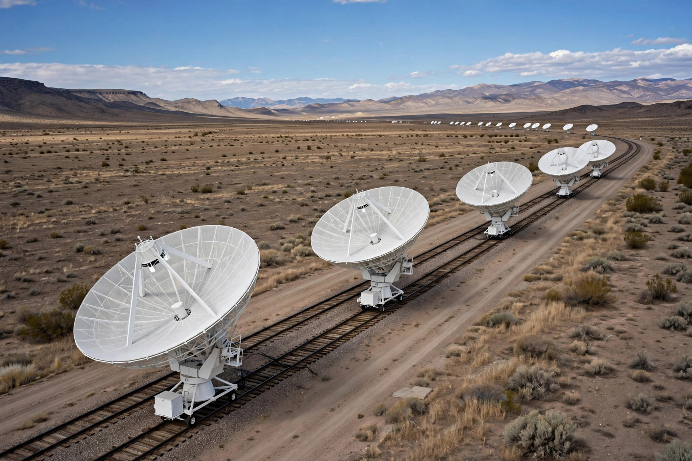

| Part of | Observational astronomy |
|---|---|
| Key instruments | Radio telescopes, interferometers |
| Major discoveries | Cosmic microwave background, pulsars, quasars, the 21-cm hydrogen line |
Radio astronomy is a subfield of astronomy that studies celestial objects at radio frequencies. The first detection of radio waves from an astronomical object was in 1933, when Karl Jansky at Bell Telephone Laboratories reported radiation coming from the Milky Way. Subsequent observations have identified a number of different sources of radio emission, including stars and galaxies, as well as entirely new classes of objects, such as radio galaxies, quasars, pulsars and masers. The discovery of the cosmic microwave background radiation, the prime evidence for the Big Bang, was made through radio astronomy.
Jansky, an engineer investigating static interference for transatlantic voice transmissions, identified a steady hiss coming from the direction of the galactic centre. Grote Reber followed up with the first purpose-built parabolic radio telescope in his Illinois backyard in 1937 and produced the first radio sky maps. After the Second World War, groups led by J. S. Hey in Britain, Martin Ryle in Cambridge and others turned wartime radar expertise to astronomy, developing aperture synthesis interferometry. In 1951 the 21-centimetre spectral line of neutral hydrogen — predicted by Hendrik van de Hulst — was detected, giving astronomers a way to map the spiral structure of the galaxy through obscuring dust.
Radio astronomers use single-dish telescopes such as the 100-metre Green Bank Telescope, and interferometric arrays — including the Very Large Array, ALMA (at millimetre wavelengths) and the global very-long-baseline interferometry networks — which combine signals from many antennas to achieve the resolution of a telescope as large as their separation. Radio observations can be made day and night and through clouds, but must contend with human-made radio interference, motivating remote sites and planned telescopes on the far side of the Moon.
Celestial radio sources include thermal emission from ionised gas, synchrotron radiation from electrons spiralling in magnetic fields (in supernova remnants, radio galaxies and the galactic plane), spectral lines from atoms and molecules in interstellar clouds, and coherent pulses from rotating neutron stars. The Square Kilometre Array, under construction in Australia and South Africa, will be the largest radio observatory ever built.